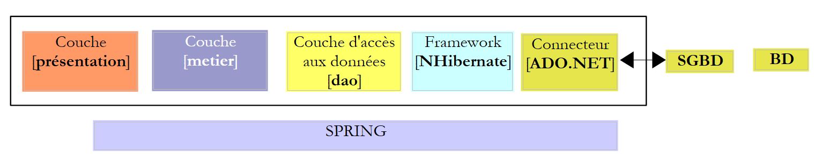
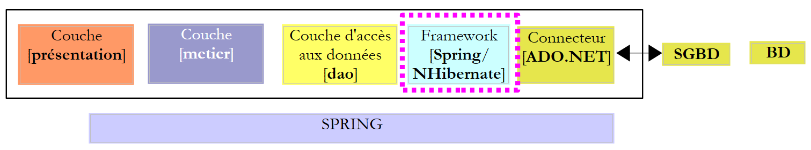
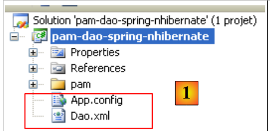
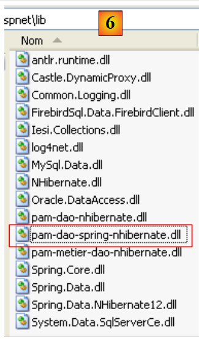
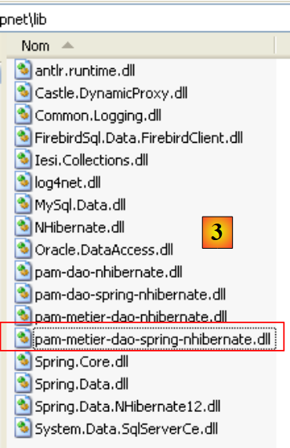
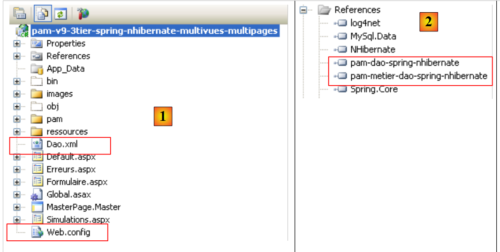
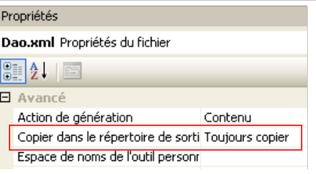

13. La aplicación [SimuPaie] – version 9 – integración Spring / NHibernate
Nos proponemos aquí retomar la aplicación ASP.NET de tres capas de la version 7 [pam-v7-3tier-nhibernate-multivues-multipages]. La arquitectura por capas de la aplicación era la siguiente:
 |
En el ejemplo anterior, la capa [dao] se había implementado con el marco NHibernate. El marco Spring solo se había utilizado para la integración de las capas entre sí. El marco Spring ofrece clases de utilidades para trabajar con el marco Nhibernate. El uso de estas clases hace que el código de la capa [dao] sea más sencillo de escribir. La arquitectura anterior evoluciona de la siguiente manera:
 |
Debido a la estructura por capas utilizada, el uso de la integración Spring / NHibernate implica la modificación únicamente de la capa [dao]. Las capas [presentation] (web / ASP.NET) y [metier] no tendrán que modificarse. Esta es la principal ventaja de las arquitecturas en capas integradas por Spring.
A continuación, construiremos la capa [dao] con [Spring / NHibernate] comentando el código de una solución funcional. No pretenderemos ofrecer todas las posibilidades de configuración o de uso del marco [Spring / Nhibernate]. El lector podrá adaptar la solución propuesta a sus propios problemas con la ayuda de la documentación de Spring.NET y [http://www.springframework.net/documentation.html] (junio de 2010).
El procedimiento seguido para construir las capas [dao] y [metier] es el de la version 3 descrito en el apartado 7. El procedimiento seguido para la capa [présentation] es el de la version 7 descrito en el apartado 11.
13.1. La capa [dao] de acceso a los datos
 |
13.1.1. El proyecto Visual Studio C# de la capa [dao]
El proyecto de Visual Studio de la capa [dao] es el siguiente:
 |
- en [1], el proyecto en su totalidad
- la carpeta [pam] contiene las clases del proyecto, así como la configuración de las entidades NHibernate
- los archivos [App.config] y [Dao.xml] configuran el framework Spring / NHibernate. Tendremos que describir el contenido de estos dos archivos.
- En [2], las diferentes clases del proyecto
- en la carpeta [entites] encontramos las entidades NHibernate estudiadas en el proyecto [pam-dao-nhibernate]
- en la carpeta [service], encontramos la interfaz [IPamDao] y su implementación con el framework Spring / NHibernate [PamDaoSpringNHibernate]. Tendremos que escribir esta nueva implementación de la interfaz [IPamDao]
- La carpeta [tests] contiene las mismas pruebas que el proyecto [pam-dao-nhibernate]. Estas prueban la misma interfaz [IPamdao].
- En [3], las referencias del proyecto. La integración Spring / NHibernate requiere dos nuevas DLL, [Spring.Data] y [Spring.Data.NHibernate12]. Estos DLL están disponibles en el marco Spring.Net. Se han añadido a la carpeta [lib] de los DLL y [4]:
 |
En las referencias [3] del proyecto, se encuentran las siguientes DLL:
- NHibernate: para el ORM NHibernate
- MySql.Data: el controlador ADO.NET del SGBD MySQL
- Spring.Core: para el framework Spring, que garantiza la integración de las capas
- log4net: una biblioteca de registros
- nunit.framework: una biblioteca de pruebas unitarias
- Spring.Data y Spring.Data.NHibernate12: garantizan la compatibilidad con Spring / NHibernate.
Estas referencias se han tomado de la carpeta [lib] [4]. Hay que asegurarse de que todas estas referencias tengan la propiedad «Copia local» establecida en «True» [5]:
13.1.2. Configuración del proyecto C#
El proyecto está configurado de la siguiente manera:
 |
- en [1], el nombre del ensamblado del proyecto es [pam-dao-spring-nhibernate]. Este nombre aparece en varios archivos de configuración del proyecto.
13.1.3. Las entidades de la capa [dao]
 |
Las entidades (objetos) necesarias para la capa [dao] se han reunido en la carpeta [entites] [1] del proyecto. Estas entidades son las del proyecto [pam-dao-nhibernate], con una diferencia en los archivos de configuración NHibernate. Tomemos, por ejemplo, el archivo [Employe.hbm.xml]:
- en [2], el archivo está configurado para incorporarse al ensamblado del proyecto
Su contenido es el siguiente:
<?xml version="1.0" encoding="utf-8" ?>
<hibernate-mapping xmlns="urn:nhibernate-mapping-2.2"
namespace="Pam.Dao.Entites" assembly="pam-dao-spring-nhibernate">
<class name="Employe" table="EMPLOYES">
<id name="Id" column="ID">
<generator class="native" />
</id>
<version name="Version" column="VERSION"/>
<property name="SS" column="SS" length="15" not-null="true" unique="true"/>
<property name="Nom" column="NOM" length="30" not-null="true"/>
<property name="Prenom" column="PRENOM" length="20" not-null="true"/>
<property name="Adresse" column="ADRESSE" length="50" not-null="true" />
<property name="Ville" column="VILLE" length="30" not-null="true"/>
<property name="CodePostal" column="CP" length="5" not-null="true"/>
<many-to-one name="Indemnites" column="INDEMNITE_ID" cascade="all" lazy="false"/>
</class>
</hibernate-mapping>
- línea 2: el atributo assembly indica que el archivo [Employe.hbm.xml] se encontrará en el ensamblado [pam-dao-spring-nhibernate]
13.1.4. Configuración de Spring / NHibernate
Volvamos al proyecto de Visual C#:
 |
- en [1], los archivos [App.config] y [Dao.xml] configuran la integración Spring / NHibernate
13.1.4.1. El archivo [App.config]
El archivo [App.config] es el siguiente:
<?xml version="1.0" encoding="utf-8" ?>
<configuration>
<!-- secciones de configuración -->
<configSections>
<sectionGroup name="spring">
<section name="parsers" type="Spring.Context.Support.NamespaceParsersSectionHandler, Spring.Core" />
<section name="objects" type="Spring.Context.Support.DefaultSectionHandler, Spring.Core" />
<section name="context" type="Spring.Context.Support.ContextHandler, Spring.Core" />
</sectionGroup>
<section name="log4net" type="log4net.Config.Log4NetConfigurationSectionHandler,log4net" />
</configSections>
<!-- configuración de Spring -->
<spring>
<parsers>
<parser type="Spring.Data.Config.DatabaseNamespaceParser, Spring.Data" />
</parsers>
<context>
<resource uri="Dao.xml" />
</context>
</spring>
<!-- Esta sección contiene los ajustes de configuración de log4net -->
<!-- NOTE IMPORTANTE: los registros no están activos por defecto. Deben activarse mediante programación
avec l'instruction log4net.Config.XmlConfigurator.Configure();
! -->
<log4net>
<appender name="ConsoleAppender" type="log4net.Appender.ConsoleAppender">
<layout type="log4net.Layout.PatternLayout">
<conversionPattern value="%-5level %logger - %message%newline" />
</layout>
</appender>
<!-- Establecer el nivel de registro predeterminado en DEBUG -->
<root>
<level value="DEBUG" />
<appender-ref ref="ConsoleAppender" />
</root>
<!-- Configurar el registro para Spring. Los nombres de los registradores en Spring se corresponden con el espacio de nombres -->
<logger name="Spring">
<level value="INFO" />
</logger>
<logger name="Spring.Data">
<level value="DEBUG" />
</logger>
<logger name="NHibernate">
<level value="DEBUG" />
</logger>
</log4net>
</configuration>
El archivo [App.config] anterior configura Spring (líneas 5-9, 15-22), log4net (línea 10, líneas 28-53), pero no NHibernate. Los objetos de Spring no se configuran en [App.config], sino en el archivo [Dao.xml] (línea 20). Por lo tanto, la configuración de Spring / NHibernate, que consiste en declarar objetos Spring específicos, se encontrará en este archivo.
13.1.4.2. El archivo [Dao.xml]
El archivo [Dao.xml], que reúne los objetos gestionados por Spring, es el siguiente:
<?xml version="1.0" encoding="utf-8" ?>
<objects xmlns="http://www.springframework.net"
xmlns:db="http://www.springframework.net/database">
<!-- Referenciado por el archivo de configuración del contexto de la aplicación principal -->
<description>
Application Spring / NHibernate
</description>
<!-- Configuración de la base de datos y NHibernate -->
<db:provider id="DbProvider"
provider="MySql.Data.MySqlClient"
connectionString="Server=localhost;Database=dbpam_nhibernate;Uid=root;Pwd=;"/>
<object id="NHibernateSessionFactory" type="Spring.Data.NHibernate.LocalSessionFactoryObject, Spring.Data.NHibernate12">
<property name="DbProvider" ref="DbProvider"/>
<property name="MappingAssemblies">
<list>
<value>pam-dao-spring-nhibernate</value>
</list>
</property>
<property name="HibernateProperties">
<dictionary>
<entry key="hibernate.dialect" value="NHibernate.Dialect.MySQLDialect"/>
<entry key="hibernate.show_sql" value="false"/>
</dictionary>
</property>
<property name="ExposeTransactionAwareSessionFactory" value="true" />
</object>
<!-- gestor de transacciones -->
<object id="transactionManager"
type="Spring.Data.NHibernate.HibernateTransactionManager, Spring.Data.NHibernate12">
<property name="DbProvider" ref="DbProvider"/>
<property name="SessionFactory" ref="NHibernateSessionFactory"/>
</object>
<!-- Plantilla de Hibernate -->
<object id="HibernateTemplate" type="Spring.Data.NHibernate.Generic.HibernateTemplate">
<property name="SessionFactory" ref="NHibernateSessionFactory" />
<property name="TemplateFlushMode" value="Auto" />
<property name="CacheQueries" value="true" />
</object>
<!-- Data Objetos de Access -->
<object id="pamdao" type="Pam.Dao.Service.PamDaoSpringNHibernate, pam-dao-spring-nhibernate" init-method="init" destroy-method="destroy">
<property name="HibernateTemplate" ref="HibernateTemplate"/>
</object>
</objects>
- Las líneas 11-13 configuran la conexión a la base de datos [dbpam_nhibernate]. En ellas se encuentra:
- el proveedor ADO.NET necesario para la conexión, en este caso el proveedor de SGBD MySQL. Esto implica tener DLL y [Mysql.Data] en las referencias del proyecto.
- la cadena de conexión a la base de datos (servidor, nombre de la base, propietario de la conexión, su contraseña)
- las líneas 15-29 configuran el SessionFactory de NHibernate, el objeto que sirve para obtener sesiones NHibernate. Recordemos que toda operación en la base de datos se realiza dentro de una sesión NHibernate. En la línea 15, se puede ver que SessionFactory está implementado por la clase Spring.Data.NHibernate.LocalSessionFactoryObject se encuentra en DLL Spring.Data.NHibernate12.
- línea 16: la propiedad DbProvider establece los parámetros de conexión a la base de datos (proveedor ADO.NET y cadena de conexión). Aquí, esta propiedad hace referencia al objeto DbProvider definido anteriormente en las líneas 11-13.
- Líneas 17-20: establecen la lista de ensamblados que contienen archivos [*.hbm.xml] que configuran entidades gestionadas por NHibernate. La línea 19 indica que estos archivos se encontrarán en el ensamblado del proyecto. Recordamos que este nombre se encuentra en las propiedades del proyecto C#. Recordamos también que todos los archivos [*.hbm.xml] se han configurado para ser incorporados al ensamblado del proyecto.
- Líneas 22-27: propiedades específicas de NHibernate.
- línea 24: el dialecto SQL utilizado será el de MySQL
- línea 25: el SQL emitido por NHibernate no aparecerá en los registros de la consola. Establecer esta propiedad en true permite conocer las órdenes SQL emitidas por NHibernate. Esto puede ayudar a comprender, por ejemplo, por qué una aplicación es lenta al acceder a la base de datos.
- Línea 28: la propiedad ExposeTransactionAwareSessionFactory establecida en true hará que Spring gestione las anotaciones de gestión de transacciones que se encuentren en el código C#. Volveremos sobre esto cuando escribamos la clase que implementa la capa [dao].
- Las líneas 32-36 definen el gestor de transacciones. Una vez más, este gestor es una clase Spring de la clase DLL Spring.Data.NHibernate12. Este gestor necesita conocer los parámetros de conexión a la base de datos (línea 34), así como SessionFactory de NHibernate (línea 35).
- Las líneas 39-43 definen las propiedades de la clase HibernateTemplate, que también es una clase de Spring. Esta clase se utilizará como clase de utilidades en la clase que implementa la capa [dao]. Facilita las interacciones con los objetos NHibernate. Esta clase tiene ciertas propiedades que hay que inicializar:
- línea 40: la propiedad SessionFactory de NHibernate
- línea 41: la propiedad TemplateFlushMode establece el modo de sincronización del contexto de persistencia NHibernate con la base de datos. El modo Auto hace que se produzca la sincronización:
- al final de una transacción
- antes de una operación select
- línea 42: las consultas HQL (Hibernate Query Language) se almacenarán en caché. Esto puede suponer una mejora en el rendimiento.
- las líneas 46-48 definen la clase de implementación de la capa [dao]
- línea 46: la capa [dao] será implementada por la clase [PamdaoSpringNHibernate] de DLL [pam-dao-spring-nhibernate]. Tras la instanciación de la clase, se ejecutará inmediatamente el método init de la clase. Al cerrarse el contenedor Spring, se ejecutará el método destroy de la clase.
- Línea 47: la clase [PamDaoSpringNHibernate] tendrá una propiedad HibernateTemplate que se inicializará con la propiedad HibernateTemplate de la línea 39.
13.1.5. Implementación de la capa [dao]
13.1.5.1. El esqueleto de la clase de implementación
La interfaz [IPamDao] es la misma que en el proyecto [pam-dao-nhibernate]:
using Pam.Dao.Entites;
namespace Pam.Dao.Service {
public interface IPamDao {
// lista de todas las identidades de los empleados
Employe[] GetAllIdentitesEmployes();
// un empleado concreto con sus prestaciones
Employe GetEmploye(string ss);
// lista de todos los cotisations
Cotisations GetCotisations();
}
}
- línea 1: se importa el espacio de nombres de las entidades de la capa [dao].
- línea 3: la capa [dao] se encuentra en el espacio de nombres [Pam.Dao.Service]. Los elementos del espacio de nombres [Pam.Dao.Entites] pueden crearse en varias instancias. Los elementos del espacio de nombres [Pam.Dao.Service] se crean en una única instancia (singleton). Esto es lo que ha justificado la elección de los nombres de los espacios de nombres.
- línea 4: la interfaz se llama [IPamDao]. Define tres métodos:
- línea 6, [GetAllIdentitesEmployes] devuelve una matriz de objetos de tipo [Employe] que representa la lista de cuidadoras infantiles en un formato simplificado (apellidos, nombre, SS).
- línea 8, [GetEmploye] devuelve un objeto [Employe]: el empleado cuyo número de la Seguridad Social se ha pasado como parámetro al método, junto con las prestaciones relacionadas con su índice.
- Línea 10, [GetCotisations] devuelve el objeto [Cotisations] que encapsula los tipos de las diferentes cotizaciones sociales cotisations que deben deducirse del salario bruto.
El esqueleto de la clase de implementación de esta interfaz con el soporte Spring / NHibernate podría ser el siguiente:
using System;
using System.Collections;
using System.Collections.Generic;
using Pam.Dao.Entites;
using Spring.Data.NHibernate.Generic.Support;
using Spring.Transaction.Interceptor;
namespace Pam.Dao.Service {
public class PamDaoSpringNHibernate : HibernateDaoSupport, IPamDao {
// campos privados
private Cotisations cotisations;
private Employe[] employes;
// inicio
[Transaction(ReadOnly = true)]
public void init() {
...
}
// eliminación de objeto
public void destroy() {
if (HibernateTemplate.SessionFactory != null) {
HibernateTemplate.SessionFactory.Close();
}
}
// lista de todas las identidades de los empleados
public Employe[] GetAllIdentitesEmployes() {
return employes;
}
// un empleado concreto con sus prestaciones
[Transaction(ReadOnly = true)]
public Employe GetEmploye(string ss) {
....
}
// lista de cotisations
public Cotisations GetCotisations() {
return cotisations;
}
}
}
- línea 9: la clase [PamDaoSpringNHibernate] implementa correctamente la interfaz de la capa [dao] [IPamDao]. También deriva de la clase Spring [HibernateDaoSupport]. Esta clase tiene una propiedad [HibernateTemplate] que se inicializa mediante la configuración de Spring que se ha realizado (línea 2 a continuación):
<object id="pamdao" type="Pam.Dao.Service.PamDaoSpringNHibernate, pam-dao-spring-nhibernate" init-method="init" destroy-method="destroy">
<property name="HibernateTemplate" ref="HibernateTemplate"/>
</object>
- En la línea 1 anterior, vemos que la definición del objeto [pamdao] indica que los métodos init y destroy de la clase [PamDaoSpringNHibernate] deben ejecutarse en momentos concretos. Estos dos métodos están presentes en la clase, en las líneas 16 y 21.
- Líneas 15 y 34: anotaciones que hacen que el método anotado se ejecute en una transacción. El atributo ReadOnly=true indica que la transacción es de solo lectura. El método que se ejecuta en la transacción puede lanzar una excepción. En ese caso, Spring realiza un rollback automático de la transacción. Esta anotación elimina la necesidad de gestionar una transacción dentro del método.
- Línea 16: Spring ejecuta el método init inmediatamente después de la instanciación de la clase. Veremos que su objetivo es inicializar los campos privados de las líneas 11 y 12. Se ejecutará en una transacción (línea 15).
- Los métodos de la interfaz [IPamDao] se implementan en las líneas 28, 35 y 40.
- Líneas 28-30: el método [GetAllIdentitesEmployes] se limita a devolver el atributo de la línea 12 inicializado por el método init.
- Líneas 40-42: el método [GetCotisations] se limita a devolver el atributo de la línea 11 inicializado por el método init.
13.1.5.2. Métodos útiles de la clase HibernateTemplate
Utilizaremos los siguientes métodos de la clase HibernateTemplate:
IList<T> Find<T>(string requete_hql) | ejecuta la consulta HQL y devuelve una lista de objetos de tipo T |
IList<T> Find<T>(string requete_hql, object[]) | ejecuta una consulta HQL parametrizada por ?. Los valores de estos parámetros son proporcionados por la tabla de objetos. |
IList<T> LoadAll<T>() | devuelve todas las entidades de tipo T |
Existen otros métodos útiles que no tendremos ocasión de utilizar y que permiten recuperar, guardar, actualizar y eliminar entidades:
T Load<T>(object id) | introduce en la sesión NHibernate la entidad de tipo T que tiene la clave primaria id. |
void SaveOrUpdate(object entidad) | inserta (INSERT) o actualiza (UPDATE) el objeto entidad, dependiendo de si este tiene una clave primaria (UPDATE) o no (INSERT). La ausencia de clave primaria se puede configurar mediante el atributo unsaved-values del archivo de configuración de la entidad. Tras la operación SaveOrUpdate, el objeto entidad se encuentra en la sesión NHibernate. |
void Delete(object entidad) | elimina el objeto entidad de la sesión NHibernate. |
13.1.5.3. Implementación del método init
El método init de la clase [PamDaoSpringNHibernate] es, por configuración, el método que se ejecuta tras la instanciación de la clase por parte de Spring. Su objetivo es almacenar en caché local las identidades simplificadas de los empleados (nombre, apellidos, SS) y las tarifas de cotisations. Su código podría ser el siguiente.
[Transaction(ReadOnly = true)]
public void init() {
try {
// se recupera la lista simplificada de empleados
IList<object[]> lignes = HibernateTemplate.Find<object[]>("select e.SS,e.Nom,e.Prenom from Employe e");
// se coloca en una tabla
employes = new Employe[lignes.Count];
int i = 0;
foreach (object[] ligne in lignes) {
employes[i] = new Employe() { SS = ligne[0].ToString(), Nom = ligne[1].ToString(), Prenom = ligne[2].ToString() };
i++;
}
// se colocan las tasas de cotisations en un objeto
cotisations = (HibernateTemplate.LoadAll<Cotisations>())[0];
} catch (Exception ex) {
// se transforma la excepción
throw new PamException(string.Format("Erreur d'accès à la BD : [{0}]", ex.ToString()), 43);
}
}
- línea 5: se ejecuta una consulta HQL. Solicita los campos SS, Apellido y Nombre de todas las entidades Empleado. Devuelve una lista de objetos. Si se hubiera solicitado toda la información del empleado en forma de «select e from Empleado e», se habría obtenido una lista de objetos de tipo Empleado.
- líneas 7-12: esta lista de objetos se copia en una matriz de objetos de tipo Empleado.
- línea 14: se solicita la lista de todas las entidades de tipo Cotisations. Sabemos que esta lista solo tiene un elemento. Por lo tanto, recuperamos el primer elemento de la lista para obtener las tasas de cotisations.
- Las líneas 7 y 14 inicializan los dos campos privados de la clase.
13.1.5.4. Implementación del método GetEmploye
El método GetEmploye debe devolver la entidad Empleado con un n.º SS dado. Su código podría ser el siguiente:
[Transaction(ReadOnly = true)]
public Employe GetEmploye(string ss) {
IList<Employe> employés = null;
try {
// consulta
employés = HibernateTemplate.Find<Employe>("select e from Employe e where e.SS=?", new object[]{ss});
} catch (Exception ex) {
// se transforma la excepción
throw new PamException(string.Format("Erreur d'accès à la BD lors de la demande de l'employé de n° ss [{0}] : [{1}]", ss, ex.ToString()), 41);
}
// ¿Se ha recuperado un empleado?
if (employés.Count == 0) {
// se notifica el hecho
throw new PamException(string.Format("L'employé de n° ss [{0}] n'existe pas", ss), 42);
} else {
return employés[0];
}
}
- línea 6: obtiene la lista de empleados con un número SS determinado
- línea 12: normalmente, si el empleado existe, se debe obtener una lista con un solo elemento
- línea 14: si no es así, se lanza una excepción
- línea 16: si es así, se devuelve el primer empleado de la lista
13.1.5.5. Conclusión
Si comparamos el código de la capa [dao] en el caso de utilizar
- solo del framework NHibernate
- del marco Spring / NHibernate
, nos damos cuenta de que la segunda solución ha permitido escribir un código más sencillo.
13.2. Pruebas de la capa [dao]
13.2.1. El proyecto de Visual Studio
El proyecto de Visual Studio ya se ha presentado. Recordemos:
 |
- en [1], el proyecto en su totalidad
- en [2], las diferentes clases del proyecto. La carpeta [tests] contiene una prueba de consola [Main.cs] y una prueba unitaria [NUnit.cs].
- en [3], se compila el programa [Main.cs].
 |
- En [4], no se genera el archivo [NUnit.cs].
- El proyecto es una aplicación de consola. La clase ejecutada es la especificada en [5], la clase del archivo [Main.cs].
13.2.2. El programa de prueba de consola [Main.cs]
El programa de prueba [Main.cs] se ejecuta en la siguiente arquitectura:
 |
Se encarga de probar los métodos de la interfaz [IPamDao]. Un ejemplo básico podría ser el siguiente:
using System;
using Pam.Dao.Entites;
using Pam.Dao.Service;
using Spring.Context.Support;
namespace Pam.Dao.Tests {
public class MainPamDaoTests {
public static void Main() {
try {
// instanciación de la capa [dao]
IPamDao pamDao = (IPamDao)ContextRegistry.GetContext().GetObject("pamdao");
// lista de identidades de los empleados
foreach (Employe Employe in pamDao.GetAllIdentitesEmployes()) {
Console.WriteLine(Employe.ToString());
}
// un empleado con sus prestaciones
Console.WriteLine("------------------------------------");
Console.WriteLine(pamDao.GetEmploye("254104940426058"));
Console.WriteLine("------------------------------------");
// lista de cotisations
Cotisations cotisations = pamDao.GetCotisations();
Console.WriteLine(cotisations.ToString());
} catch (Exception ex) {
// visualización de excepciones
Console.WriteLine(ex.ToString());
}
//pausa
Console.ReadLine();
}
}
}
- línea 11: se solicita a Spring una referencia en la capa [dao].
- líneas 13-15: prueba del método [GetAllIdentitesEmployes] de la interfaz [IPamDao]
- línea 18: prueba del método [GetEmploye] de la interfaz [IPamDao]
- línea 21: prueba del método [GetCotisations] de la interfaz [IPamDao]
Spring, NHibernate y log4net se configuran mediante el archivo [App.config] analizado en el apartado 13.1.4.1.
La ejecución realizada con la base de datos descrita en el apartado 6.2 da el siguiente resultado en la consola:
- líneas 1-2: los 2 empleados de tipo [Employe] con la única información [SS, Nom, Prenom]
- línea 4: el empleado de tipo [Employe] con el n.º de la Seguridad Social [254104940426058]
- línea 5: las tasas de cotisations
13.2.3. Pruebas unitarias con NUnit
Pasamos ahora a una prueba unitaria NUnit. El proyecto de Visual Studio de la capa [dao] evolucionará de la siguiente manera:
 |
- a [1], el programa de prueba [NUnit.cs]
- en [2,3], el proyecto generará un DLL denominado [pam-dao-spring-nhibernate.dll]
- En [4], la referencia a DLL del marco NUnit: [nunit.framework.dll]
- en [5], la clase [Main.cs] no se incluirá en DLL [pam-dao-spring-nhibernate]
- en [6], la clase [NUnit.cs] se incluirá en la DLL [pam-dao-spring-nhibernate]
La clase de prueba NUnit es la siguiente:
using System.Collections;
using NUnit.Framework;
using Pam.Dao.Service;
using Pam.Dao.Entites;
using Spring.Objects.Factory.Xml;
using Spring.Core.IO;
using Spring.Context.Support;
namespace Pam.Dao.Tests {
[TestFixture]
public class NunitPamDao : AssertionHelper {
// la capa [dao] a probar
private IPamDao pamDao = null;
// constructor
public NunitPamDao() {
// instanciación de la capa [dao]
pamDao = (IPamDao)ContextRegistry.GetContext().GetObject("pamdao");
}
// inicialización
[SetUp]
public void Init() {
}
[Test]
public void GetAllIdentitesEmployes() {
// verificación del número de empleados
Expect(2, EqualTo(pamDao.GetAllIdentitesEmployes().Length));
}
[Test]
public void GetCotisations() {
// verificación tasa de cotisations
Cotisations cotisations = pamDao.GetCotisations();
Expect(3.49, EqualTo(cotisations.CsgRds).Within(1E-06));
Expect(6.15, EqualTo(cotisations.Csgd).Within(1E-06));
Expect(9.39, EqualTo(cotisations.Secu).Within(1E-06));
Expect(7.88, EqualTo(cotisations.Retraite).Within(1E-06));
}
[Test]
public void GetEmployeIdemnites() {
// verificación de personas
Employe employe1 = pamDao.GetEmploye("254104940426058");
Employe employe2 = pamDao.GetEmploye("260124402111742");
Expect("Jouveinal", EqualTo(employe1.Nom));
Expect(2.1, EqualTo(employe1.Indemnites.BaseHeure).Within(1E-06));
Expect("Laverti", EqualTo(employe2.Nom));
Expect(1.93, EqualTo(employe2.Indemnites.BaseHeure).Within(1E-06));
}
[Test]
public void GetEmployeIdemnites2() {
// verificación de persona inexistente
bool erreur = false;
try {
Employe employe1 = pamDao.GetEmploye("xx");
} catch {
erreur = true;
}
Expect(erreur, True);
}
}
}
Esta clase ya se ha estudiado en el apartado 7.3.4.
La generación del proyecto crea DLL [pam-dao-spring-nhibernate.dll] en la carpeta [bin/Release].
 |
Se cargan los archivos DLL y [pam-dao-spring-nhibernate.dll] con la herramienta [NUnit-Gui], version 2.4.6 y se ejecutan las pruebas:
 |
En el ejemplo anterior, las pruebas se han superado.
Trabajo práctico:
ejecutar en el equipo las pruebas de la clase [PamDaoSpringNHibernate].- utilizar diferentes archivos de configuración [Dao.xml] para utilizar otros SGBD (Firebird, MySQL, Postgres, SQL Server)
13.2.4. Generación de l e la DLL de la capa [dao]
Una vez escrita y probada la clase [PamDaoNHibernate], se generará la DLL de la capa [dao] de la siguiente manera:
 |
- [1], los programas de prueba se excluyen del ensamblaje del proyecto
- [2,3], configuración del proyecto
- [4], generación del proyecto
- el archivo DLL se genera en la carpeta [bin/Release] [5]. Lo añadimos a los DLL ya presentes en la carpeta [lib] [6]:
 |
13.3. La capa de negocio
Volvamos a la arquitectura general de la aplicación [SimuPaie]:
 |
Ahora damos por hecho que la capa [dao] está implementada y que se ha encapsulado en DLL [pam-dao-spring-nhibernate.dll]. Ahora nos centramos en la capa [metier]. Es esta la que implementa las reglas de negocio, en este caso las reglas de cálculo de un salario.
El proyecto de Visual Studio de la capa de negocio podría tener el siguiente aspecto:
 |
- en [1], el conjunto del proyecto configurado por los archivos [App.config] y [Dao.xml]. El archivo [App.config] es idéntico al que había en el proyecto de la capa [dao] [pam-dao-spring-nhibernate]. Lo mismo ocurre con el archivo [Dao.xml], salvo que declara un objeto Spring adicional de id pammetier. La declaración de este último es idéntica a la que había en el archivo [App.config] del proyecto [pam-metier-dao-nhibernate].
- En [2], la carpeta [pam] es idéntica a la que había en la capa [metier] del proyecto [pam-metier-dao-nhibernate]
- en [3] las referencias utilizadas por el proyecto. Cabe destacar DLL y [pam-dao-spring-nhibernate] de la capa [dao] estudiada anteriormente.
Pregunta: compile el proyecto [pam-metier-dao-spring-nhibernate] anterior. Se probará por separado:
-
en modo consola mediante el programa de consola [Main.cs]
-
mediante la prueba unitaria [NUnit.cs] ejecutada por el marco NUnit
El nuevo proyecto [pam-metier-dao-spring-nhibernate] se puede compilar simplemente copiando el proyecto [pam-metier-dao-nhibernate] y modificando los elementos que deben cambiarse.
Tras las pruebas, se generará el DLL de la capa [metier], al que se denominará [pam-metier-dao-spring-nhibernate]:
 |
- en [1], la prueba NUnit superada
- en [2], el DLL generado por el proyecto
Añadiremos el DLL de la capa [metier] a los DLL ya presentes en la carpeta [lib] [3]:
 |
13.4. La capa [web]
Volvamos a la arquitectura general de la aplicación [SimuPaie]:
 |
Consideramos que las capas [dao] y [métier] están implementadas y encapsuladas en las DLL y [pam-dao-spring-nhibernate, pam-metier-dao-spring-nhibernate]. A continuación, describimos la capa web.
El proyecto Visual Web Developer de la capa [web] se obtiene, en primer lugar, simplemente copiando la carpeta del proyecto web [pam-v7-3tier-nhibernate-multivues-multipages]. A continuación, el proyecto se renombra como [pam-v9-3tier-spring-nhibernate-multivues-multipages]:
 |
El nuevo proyecto web [pam-v9-3tier-spring-nhibernate-multivues-multipages] difiere del proyecto [pam-v7-3tier-nhibernate-multivues-multipages] en los siguientes aspectos:
- en [1], está configurado por los archivos [Dao.xml] y [Web.config]. [Dao.xml] no existía en [pam-v7] y el archivo [Web.config] debe integrar la configuración Spring / NHibernate, mientras que en [pam-v7], solo se configuraba NHibernate.
- En [2], los DLL de las capas [dao] y [metier] son los que acabamos de construir.
El archivo [Dao.xml] es el utilizado en la construcción de la capa [metier]. El archivo [Web.config] es el de [pam-v7] al que se añade la configuración Spring / NHibernate que se encontraba en los archivos [App.config] de las capas [dao] y [metier]. El archivo [Web.config] de [pam-v9] es el siguiente:
<configuration>
<configSections>
<sectionGroup name="system.web.extensions" type="System.Web.Configuration.SystemWebExtensionsSectionGroup, System.Web.Extensions, Version=3.5.0.0, Culture=neutral, PublicKeyToken=31BF3856AD364E35">
........
</sectionGroup>
<sectionGroup name="spring">
<section name="parsers" type="Spring.Context.Support.NamespaceParsersSectionHandler, Spring.Core" />
<section name="objects" type="Spring.Context.Support.DefaultSectionHandler, Spring.Core" />
<section name="context" type="Spring.Context.Support.ContextHandler, Spring.Core" />
</sectionGroup>
<section name="log4net" type="log4net.Config.Log4NetConfigurationSectionHandler,log4net" />
</configSections>
<!-- configuración de Spring -->
<spring>
<parsers>
<parser type="Spring.Data.Config.DatabaseNamespaceParser, Spring.Data" />
</parsers>
<context>
<resource uri="~/Dao.xml" />
</context>
</spring>
............. le reste est identique au fichier [Web.config] de [pam-v7]
En las líneas 7-11 y 16-23 se encuentra la configuración de Spring que teníamos en los archivos [App.config] de las capas [dao] y [metier] construidas anteriormente, con una diferencia: en los archivos [App.config], la línea 17 estaba escrita de la siguiente manera:
<resource uri="Dao.xml" />
Con la siguiente configuración:
 |
el archivo [Dao.xml] se copia en la carpeta [bin] de la carpeta del proyecto web. Con la sintaxis
<resource uri="Dao.xml" />
el archivo [Dao.xml] se buscará en la carpeta actual del proceso que ejecuta la aplicación web. Resulta que esta carpeta no es la carpeta [bin] de la carpeta del proyecto web ejecutado. Hay que escribir:
<resource uri="~/Dao.xml" />
para que el archivo [Dao.xml] se busque en la carpeta [bin] de la carpeta del proyecto web ejecutado.
Pregunta: implementar esta aplicación web en un equipo.
13.5. Conclusión
Hemos pasado de la arquitectura:
 |
a la arquitectura:
 |
Se trataba de implementar la capa [dao] aprovechando las facilidades que ofrece la integración de NHibernate por parte de Spring.
Pudimos comprobar que esto:
- afectaba a la capa [dao]. Esta fue más sencilla de escribir, pero requirió una configuración de Spring más compleja.
- afectaba marginalmente a las capas [metier] y [web]
Aquí tuvimos otro ejemplo del interés de las arquitecturas por capas.